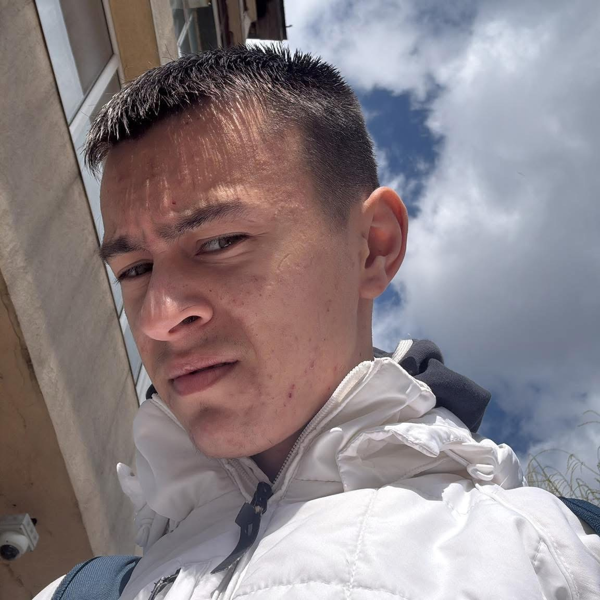

Focus FM
Ascultă radio-ul tău preferat


Echipă Focus FM

Marian Alexandru Marcu
Editor Web
Alt Realizator
DJ / Gazdă emisiune
Playlist
Top 10
1. Melodie 1
2. Melodie 2
3. Melodie 3
4. Melodie 4
5. Melodie 5
Videoclipuri
Frecvențe
97.0 - Brăila
93.8 - Buzău
97.0 - Focșani
95.9 - Ploiești
104.7 - Râmnicu Sărat
Știri TVInfo
Date legale
MEDIA GRUP PRODUCTION SRL
Telefon: 0722 123 456
CUI: 15032728
Buzău, România